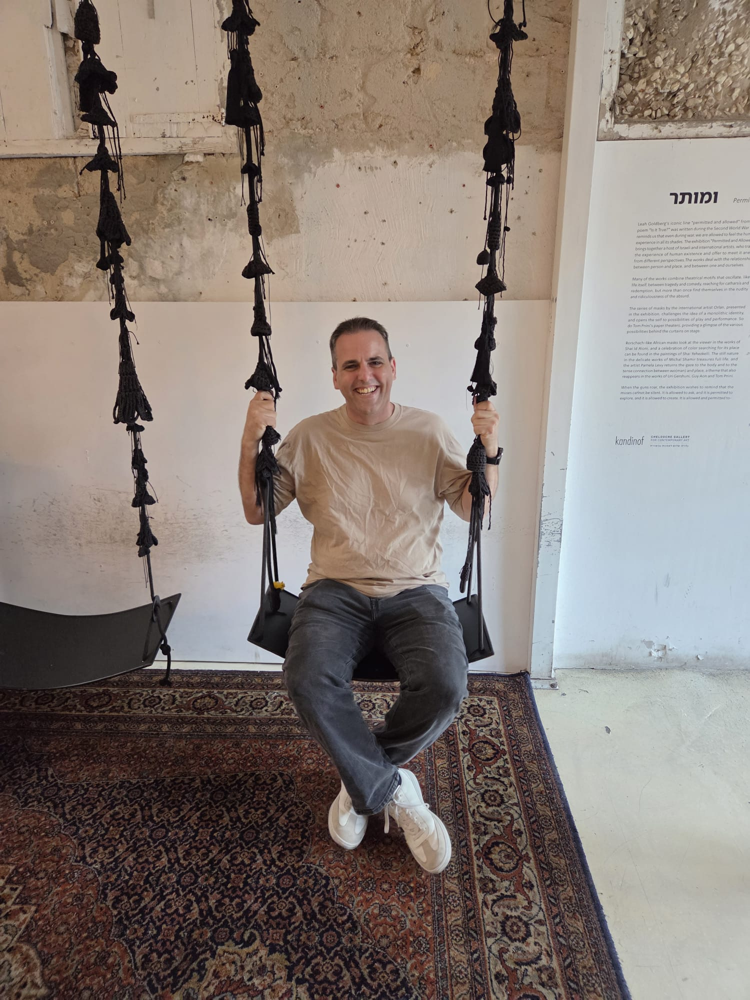
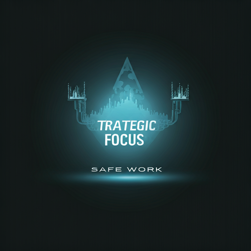
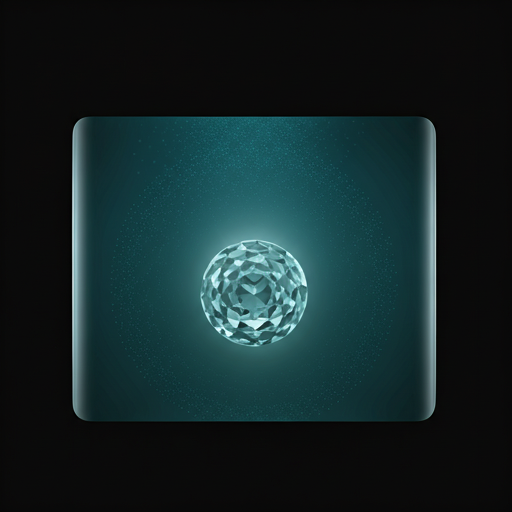
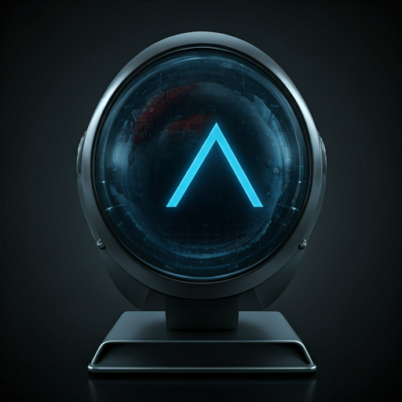

I build systems
that work for people.
I come from leadership, technology, and financial services. I've spent years untangling operational complexity so teams can focus on what actually matters — their customers and each other.

Process, People, Purpose.
I've learned that the best operations aren't built in spreadsheets — they're built in the space between how a system works and how people actually experience it.
Operational Excellence
Standardizing workflows, building KPI frameworks, and turning fragmented processes into systems that scale — without losing sight of the people running them.
- Process Standardization
- Performance Measurement
"Every process tells your team what you value. Make sure it's telling the right story."
The way work gets done shapes culture more than any mission statement. I help organizations design operations that reflect what they actually stand for.
See My ApproachCustomer & Team Focus
Designing customer journeys and knowledge bases that actually get used — and building the cross-functional alignment to keep them evolving.
- Customer Operations
- Knowledge Management
"Good operations should feel
invisible to the people
they serve."
What I've Done.
Real work across financial services, technology, and organizational strategy.
KYC & Compliance Strategy
End-to-end KYC strategies — from operating models and KPI definitions to turnaround time targets that become the North Star for investment decisions.
Learn More trending_flatProcess Standardization
Consolidating thousands of fragmented monthly workflows into standardized paths — increasing throughput without adding headcount.
Learn More trending_flat
Cross-Functional Alignment
Leading forums across Product, Platform, and Operations to define shared metrics and a unified methodology that everyone actually follows.
Learn More trending_flat
Risk & Revenue Retention
Implementing regulatory processes that protect the business without losing it — I've retained 85% of revenue while rolling out new compliance requirements.
Learn More trending_flat
Clarity AI
Personal AI Workspace for Curated Thinking. A seamless environment where your thoughts are organized and enhanced by intelligent synthesis.
Explore Workspace trending_flatLet’s talk about what’s not working.
I’m most helpful when there’s a real problem to solve — a process that’s breaking, a team that’s stuck, or a transition that needs a steady hand.
Get in Touch